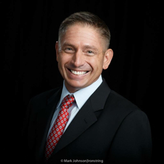

At the cutting edge of innovation and impact, we are a company creation
machine infused with the energy of a crowd, moving at high velocity.
About:
The Visionaries is a next-generation business incubator and venture studio for early-stage startups.
Our mission is to create 120 impactful companies in just 5 years. Others may
think we're biting off more than we can chew, but we're confident in our
abilities and the vision to make this a reality.
At The Visionaries, we firmly believe that business creation demands a
reformation in its culture and economics, which is why we have taken on the
responsibility of building the mechanism required to make these changes
possible
We dare to operate in a unique way, bringing our bold vision to life like no one
else has tried before.
Our approach to driving progress involves creative problem-solving,
willingness to take risks, and an enduring commitment to experimentation.
Testing, learning, and constant evolution are the pillars of our cultural
foundation, fostering a strong connection with the crowd.
This serves as our engine, enabling us to form impactful enterprises swiftly
and efficiently.
We're Building Companies That Will
Shape the Future and Our Planet
What services can we offer you and your
business?
Leadership Development:
Leadership development is the process of nurturing and enhancing individuals' skills, qualities,
and abilities to become effective leaders. It involves training, mentorship, and experiential
learning to foster self-awareness, communication,
decision-making, and strategic thinking capabilities. Through continuous development, leaders
can inspire, motivate, and guide their teams towards achieving organizational goals.
Strategic Planning:
Strategic planning is a disciplined process that involves setting goals, analyzing the internal
and external environment, formulating strategies, and implementing actions to achieve long-term
organizational success and competitive advantage.
Startup Coaching:
Startup coaching is a supportive process that helps entrepreneurs navigate the challenges of
starting a new venture. Through mentorship, guidance, and expertise, coaches provide valuable
insights, assist in strategy development, and foster
growth-oriented mindsets for startup success.
Who are we?
Meet our Team
Peter Yassopoulos
Founder and Owner
Peter is an entrepreneur and seriafounder who has aunched startups in media, education, biotech,
fintech/crypto, recruitment, and more. Some of his "coo" projects incude PreppedSuccess,
Addicted2Crypto, LinkedInSmart, VirtuaWisdom nstitute, Hire Fintech, and Hire Biotech. Peter is aso a
personal coach and mentor to founders, C-eveexecutives, and entrepreneurs around the gobe.
Laura Prendergeist
Co-Founder
Laura is an entrepreneur, moecuar bioogist, and word traveer. She is currenty composing a patent
appication for an HV cure. For the ast 0 years, Laura has been evoving and refining a technique
caed Neurographic Mapping to buid constructive, comprehensive soutions to existing reaity. Laura is
aso an avid hiker and practices martiaarts and meditation

Nathan Weber
CFO
Nathan is a seasoned business executive and Deoitte CPA with over three decades of professionaexperience
from business consuting, corporate finance, and pubic accounting perspectives. He has
held executive leadership roes at the highest eves for pubic and private entities ranging from
prerevenue to over $3B in annuasaes. Nathan is aso a decorated Navaveteran.